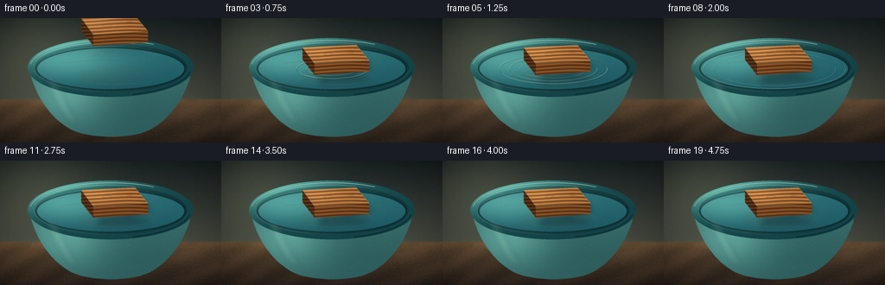
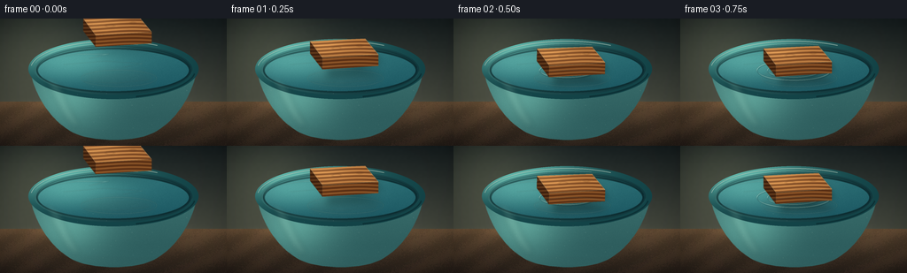
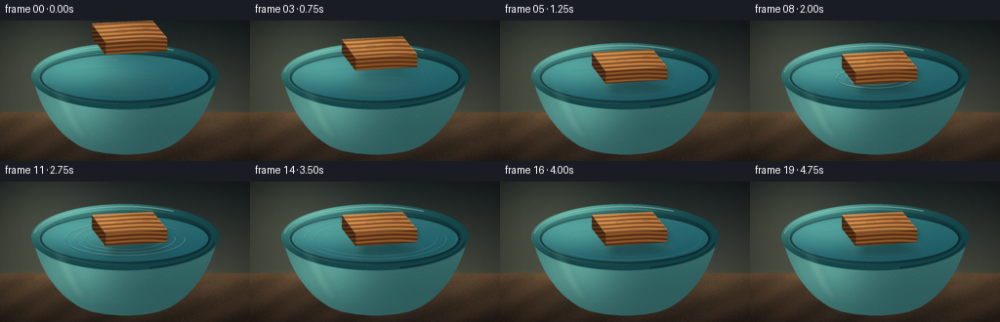
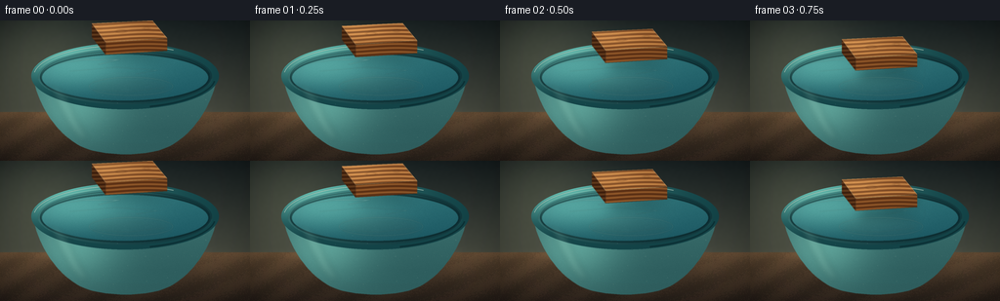

CODING AGENTS AS PIXEL WORLD MODELS
traex/DeepSeek-V4.1-Flash · phygen_009
点击播放 · 原生 RGB 像素
逐轮保存的候选
回放视频、检查图与代码变化。
每份候选均可单独播放。实际图片检查记录在下方工具轨迹中。
候选 01播放与检查图
点击播放 · 原生 RGB 像素


展开代码变化
--- 上一保存版本
+++ 本次保存版本
@@ -0,0 +1,401 @@
+from __future__ import annotations
+
+import math
+from pathlib import Path
+
+import numpy as np
+from PIL import Image, ImageDraw, ImageFilter
+
+import artifact_io
+
+
+W, H = 256, 144
+SS = 4
+FPS = 4.0
+FRAMES = 20
+SEED = 1909
+
+
+def smoothstep(x: float) -> float:
+ x = min(1.0, max(0.0, x))
+ return x * x * (3.0 - 2.0 * x)
+
+
+def cubic(p0, p1, p2, p3, steps=28):
+ points = []
+ for i in range(steps + 1):
+ t = i / steps
+ u = 1.0 - t
+ x = u**3 * p0[0] + 3 * u**2 * t * p1[0] + 3 * u * t**2 * p2[0] + t**3 * p3[0]
+ y = u**3 * p0[1] + 3 * u**2 * t * p1[1] + 3 * u * t**2 * p2[1] + t**3 * p3[1]
+ points.append((x, y))
+ return points
+
+
+def scaled(points):
+ return [(round(x * SS), round(y * SS)) for x, y in points]
+
+
+def mask_from_points(points, blur=0.0):
+ mask = Image.new("L", (W * SS, H * SS), 0)
+ ImageDraw.Draw(mask).polygon(scaled(points), fill=255)
+ if blur:
+ mask = mask.filter(ImageFilter.GaussianBlur(blur * SS))
+ return mask
+
+
+def ellipse_mask(box, blur=0.0):
+ mask = Image.new("L", (W * SS, H * SS), 0)
+ ImageDraw.Draw(mask).ellipse(tuple(round(v * SS) for v in box), fill=255)
+ if blur:
+ mask = mask.filter(ImageFilter.GaussianBlur(blur * SS))
+ return mask
+
+
+def subtract_masks(a, b):
+ return Image.fromarray(np.maximum(0, np.asarray(a, dtype=np.int16) - np.asarray(b, dtype=np.int16)).astype(np.uint8))
+
+
+def clipped_color(mask, rgb, alpha=255):
+ arr = np.zeros((H * SS, W * SS, 4), dtype=np.uint8)
+ arr[:, :, :3] = np.clip(rgb, 0, 255).astype(np.uint8)
+ arr[:, :, 3] = (np.asarray(mask, dtype=np.float32) * (alpha / 255.0)).astype(np.uint8)
+ return Image.fromarray(arr, "RGBA")
+
+
+def radial_light(xx, yy, cx, cy, sx, sy):
+ return np.exp(-(((xx - cx) / sx) ** 2 + ((yy - cy) / sy) ** 2))
+
+
+def make_background(rng):
+ yy, xx = np.mgrid[0:H, 0:W]
+ t = np.clip(yy / 100.0, 0.0, 1.0)[..., None]
+ wall_top = np.array([27.0, 36.0, 37.0])
+ wall_bottom = np.array([79.0, 82.0, 70.0])
+ bg = wall_top * (1.0 - t) + wall_bottom * t
+
+ light = radial_light(xx, yy, 37.0, 23.0, 75.0, 60.0)
+ bg += light[..., None] * np.array([35.0, 34.0, 24.0])
+
+ # Fine, low-contrast wall grain keeps the shallow backdrop from looking flat.
+ fine = rng.normal(0.0, 1.0, (H, W))
+ fine = np.asarray(Image.fromarray(((fine - fine.min()) / (np.ptp(fine) + 1e-9) * 255).astype(np.uint8)).filter(ImageFilter.GaussianBlur(1.1)))
+ bg += (fine[..., None] - 128.0) * 0.045
+
+ table = yy >= 94
+ table_t = np.clip((yy - 94) / 50.0, 0.0, 1.0)[..., None]
+ wood_top = np.array([103.0, 79.0, 55.0])
+ wood_bottom = np.array([50.0, 39.0, 31.0])
+ wood = wood_top * (1.0 - table_t) + wood_bottom * table_t
+
+ grain_phase = xx * 0.11 + 1.7 * np.sin(xx * 0.017) + rng.normal(0.0, 0.6, (H, W))
+ grain = 0.5 + 0.5 * np.sin(grain_phase + yy * 0.21)
+ wood += (grain[..., None] - 0.5) * np.array([14.0, 10.0, 7.0])
+ wood += light[..., None] * np.array([17.0, 12.0, 6.0])
+ bg = np.where(table[..., None], wood, bg)
+
+ # Warm bounce light on the wall and a soft table-edge line.
+ edge_glow = np.exp(-((yy - 96.0) / 4.2) ** 2) * np.exp(-((xx - 126.0) / 100.0) ** 2)
+ bg += edge_glow[..., None] * np.array([18.0, 13.0, 8.0])
+
+ vignette = 1.0 - 0.34 * (((xx - W / 2) / (W * 0.69)) ** 2 + ((yy - H / 2) / (H * 0.82)) ** 2)
+ bg *= np.clip(vignette, 0.55, 1.0)[..., None]
+ bg = np.clip(bg, 0, 255).astype(np.uint8)
+ return Image.fromarray(bg, "RGB").resize((W * SS, H * SS), Image.Resampling.BICUBIC)
+
+
+def make_bowl_static(base, rng):
+ canvas = base.convert("RGBA")
+ yy, xx = np.mgrid[0:H * SS, 0:W * SS]
+ xf = xx / SS
+ yf = yy / SS
+
+ # Contact and cast shadows on the table.
+ shadow = Image.new("L", (W * SS, H * SS), 0)
+ sd = ImageDraw.Draw(shadow)
+ sd.ellipse(tuple(round(v * SS) for v in (42, 105, 214, 140)), fill=118)
+ shadow = shadow.filter(ImageFilter.GaussianBlur(7.5 * SS))
+ canvas = Image.alpha_composite(canvas, clipped_color(shadow, (10, 12, 12), 112))
+
+ body_points = []
+ body_points += cubic((34, 57), (39, 92), (65, 124), (90, 132))
+ body_points += cubic((90, 132), (111, 139), (147, 139), (166, 132))
+ body_points += cubic((166, 132), (191, 124), (217, 92), (222, 57))
+ body_points += cubic((222, 57), (180, 82), (76, 82), (34, 57))
+ body_mask = mask_from_points(body_points, 0.22)
+
+ light = radial_light(xf, yf, 76.0, 88.0, 46.0, 38.0)
+ edge_light = np.clip((112.0 - yf) / 70.0, 0.0, 1.0) * 0.18
+ shade = 0.46 + 0.52 * light + edge_light
+ body_rgb = np.zeros((H * SS, W * SS, 3), dtype=np.float32)
+ dark = np.array([10.0, 42.0, 50.0])
+ bright = np.array([91.0, 157.0, 148.0])
+ body_rgb[:] = dark + (bright - dark) * shade[..., None]
+ body_rgb += (rng.normal(0.0, 1.0, (H * SS, W * SS))[..., None] * 2.1)
+ body_arr = np.zeros((H * SS, W * SS, 4), dtype=np.uint8)
+ body_arr[:, :, :3] = np.clip(body_rgb, 0, 255).astype(np.uint8)
+ body_arr[:, :, 3] = np.asarray(body_mask, dtype=np.uint8)
+ canvas = Image.alpha_composite(canvas, Image.fromarray(body_arr, "RGBA"))
+
+ # The inner wall is visible as a narrow glazed band above the water.
+ inner_mask = ellipse_mask((39, 27, 217, 87), 0.18)
+ inner_light = radial_light(xf, yf, 79.0, 44.0, 74.0, 35.0)
+ inner_rgb = np.array([17.0, 55.0, 60.0]) + inner_light[..., None] * np.array([56.0, 88.0, 78.0])
+ canvas = Image.alpha_composite(canvas, clipped_color(inner_mask, np.clip(inner_rgb, 0, 255), 255))
+
+ # Water surface: an ellipse with a cool reflected-sky gradient.
+ water_box = (43, 35, 213, 82)
+ water_mask = ellipse_mask(water_box, 0.24)
+ water_t = np.clip((yf - 35.0) / 47.0, 0.0, 1.0)
+ water_light = radial_light(xf, yf, 74.0, 48.0, 67.0, 24.0)
+ deep = np.array([8.0, 62.0, 78.0])
+ shallow = np.array([98.0, 182.0, 174.0])
+ water_rgb = deep + (shallow - deep) * (0.22 + 0.50 * water_light[..., None] + 0.18 * (1.0 - water_t[..., None]))
+ water_rgb += (rng.normal(0.0, 1.0, (H * SS, W * SS))[..., None] * 2.8)
+ canvas = Image.alpha_composite(canvas, clipped_color(water_mask, np.clip(water_rgb, 0, 255), 248))
+
+ # A few soft reflected bands give the water a readable surface.
+ glints = Image.new("RGBA", (W * SS, H * SS), (0, 0, 0, 0))
+ gd = ImageDraw.Draw(glints)
+ for pts, width, alpha in [
+ ([(58, 44), (87, 40), (123, 40), (101, 45)], 1.1, 58),
+ ([(72, 52), (118, 48), (161, 51), (139, 55)], 0.8, 44),
+ ([(95, 71), (130, 73), (168, 69)], 0.65, 35),
+ ]:
+ gd.line(scaled(pts), fill=(196, 238, 222, alpha), width=max(1, round(width * SS)), joint="curve")
+ glints = glints.filter(ImageFilter.GaussianBlur(0.45 * SS))
+ glints.putalpha(Image.fromarray((np.asarray(glints.getchannel("A"), dtype=np.float32) * np.asarray(water_mask, dtype=np.float32) / 255.0).astype(np.uint8)))
+ canvas = Image.alpha_composite(canvas, glints)
+
+ # Water's edge and a darker inner-wall shadow.
+ rim_shadow = subtract_masks(ellipse_mask((41, 33, 215, 84), 0.2), water_mask)
+ canvas = Image.alpha_composite(canvas, clipped_color(rim_shadow, (6, 28, 32), 105))
+
+ # Glazed rim ring.
+ outer_rim = ellipse_mask((32, 23, 224, 91), 0.16)
+ rim_hole = ellipse_mask((39, 29, 217, 86), 0.16)
+ rim_mask = subtract_masks(outer_rim, rim_hole)
+ rim_light = radial_light(xf, yf, 66.0, 32.0, 77.0, 28.0)
+ rim_rgb = np.array([20.0, 68.0, 72.0]) + rim_light[..., None] * np.array([78.0, 117.0, 101.0])
+ canvas = Image.alpha_composite(canvas, clipped_color(rim_mask, np.clip(rim_rgb, 0, 255), 255))
+
+ deco = Image.new("RGBA", (W * SS, H * SS), (0, 0, 0, 0))
+ dd = ImageDraw.Draw(deco)
+ dd.arc(tuple(round(v * SS) for v in (34, 25, 222, 89)), 187, 302, fill=(192, 222, 205, 150), width=round(1.35 * SS))
+ dd.arc(tuple(round(v * SS) for v in (37, 28, 219, 86)), 194, 288, fill=(239, 247, 228, 70), width=round(0.75 * SS))
+ dd.arc(tuple(round(v * SS) for v in (35, 26, 221, 90)), 8, 74, fill=(4, 31, 36, 130), width=round(1.4 * SS))
+ dd.arc(tuple(round(v * SS) for v in (41, 31, 215, 84)), 160, 355, fill=(3, 30, 34, 95), width=round(0.85 * SS))
+ canvas = Image.alpha_composite(canvas, deco.filter(ImageFilter.GaussianBlur(0.22 * SS)))
+
+ # Broad ceramic reflection on the left side of the bowl.
+ reflection = Image.new("RGBA", (W * SS, H * SS), (0, 0, 0, 0))
+ rd = ImageDraw.Draw(reflection)
+ refl_points = [(51, 62), (59, 86), (72, 109), (82, 121), (90, 122), (78, 101), (68, 77)]
+ rd.polygon(scaled(refl_points), fill=(190, 231, 207, 34))
+ reflection = reflection.filter(ImageFilter.GaussianBlur(3.1 * SS))
+ reflection.putalpha(Image.fromarray((np.asarray(reflection.getchannel("A"), dtype=np.float32) * np.asarray(body_mask, dtype=np.float32) / 255.0).astype(np.uint8)))
+ canvas = Image.alpha_composite(canvas, reflection)
+
+ # Subtle ceramic speckle, kept very low contrast.
+ speck = Image.new("RGBA", (W * SS, H * SS), (0, 0, 0, 0))
+ sp = ImageDraw.Draw(speck)
+ for _ in range(110):
+ x = rng.uniform(45, 211) * SS
+ y = rng.uniform(37, 127) * SS
+ r = rng.uniform(0.15, 0.48) * SS
+ sp.ellipse((x - r, y - r, x + r, y + r), fill=(220, 236, 211, int(rng.integers(9, 28))))
+ speck.putalpha(Image.fromarray((np.asarray(speck.getchannel("A"), dtype=np.float32) * np.asarray(body_mask, dtype=np.float32) / 255.0).astype(np.uint8)))
+ canvas = Image.alpha_composite(canvas, speck)
+
+ return canvas, body_mask, water_mask, water_box
+
+
+def rotated(points, angle, center, dy):
+ a = math.radians(angle)
+ ca, sa = math.cos(a), math.sin(a)
+ cx, cy = center
+ out = []
+ for x, y in points:
+ dx, dy0 = x - cx, y - cy
+ out.append((cx + dx * ca - dy0 * sa, cy + dx * sa + dy0 * ca + dy))
+ return out
+
+
+def wood_texture(rng):
+ yy, xx = np.mgrid[0:H * SS, 0:W * SS]
+ xf, yf = xx / SS, yy / SS
+ noise = rng.normal(0.0, 1.0, (H, W))
+ noise_img = Image.fromarray(((noise - noise.min()) / (np.ptp(noise) + 1e-9) * 255).astype(np.uint8))
+ soft = np.asarray(noise_img.filter(ImageFilter.GaussianBlur(2.4)).resize((W * SS, H * SS), Image.Resampling.BICUBIC), dtype=np.float32) / 127.5 - 1.0
+ phase = yf * 1.55 + 2.15 * np.sin(xf * 0.052) + 0.45 * soft
+ bands = 0.5 + 0.5 * np.sin(phase)
+ bands = np.clip((bands - 0.5) * 1.45 + 0.5, 0.0, 1.0)
+ fibers = 0.5 + 0.5 * np.sin(yf * 7.7 + 0.7 * np.sin(xf * 0.22) + 2.2 * soft)
+ v = 0.66 * bands + 0.34 * fibers
+
+ dark = np.array([102.0, 57.0, 28.0])
+ mid = np.array([175.0, 111.0, 55.0])
+ light = np.array([226.0, 166.0, 98.0])
+ rgb = dark + (mid - dark) * np.clip(v[..., None] * 1.25, 0.0, 1.0)
+ rgb += np.maximum(v[..., None] - 0.62, 0.0) * (light - mid) * 1.5
+ return rgb
+
+
+def add_water_shadow(canvas, silhouette, water_mask, progress, rng):
+ shadow = Image.new("L", (W * SS, H * SS), 0)
+ shifted = [(x + 5.0, y + 10.0) for x, y in silhouette]
+ ImageDraw.Draw(shadow).polygon(scaled(shifted), fill=255)
+ shadow = shadow.filter(ImageFilter.GaussianBlur((3.8 + 2.4 * (1.0 - progress)) * SS))
+ shadow = Image.fromarray((np.asarray(shadow, dtype=np.float32) * np.asarray(water_mask, dtype=np.float32) / 255.0).astype(np.uint8))
+ alpha = int(44 + 58 * progress)
+ canvas = Image.alpha_composite(canvas, clipped_color(shadow, (5, 35, 39), alpha))
+
+ reflection = Image.new("L", (W * SS, H * SS), 0)
+ rd = ImageDraw.Draw(reflection)
+ rd.ellipse(tuple(round(v * SS) for v in (93, 57, 174, 79)), fill=120)
+ reflection = reflection.filter(ImageFilter.GaussianBlur(4.2 * SS))
+ reflection = Image.fromarray((np.asarray(reflection, dtype=np.float32) * np.asarray(water_mask, dtype=np.float32) / 255.0).astype(np.uint8))
+ canvas = Image.alpha_composite(canvas, clipped_color(reflection, (112, 67, 34), 34))
+ return canvas
+
+
+def add_ripples(canvas, water_mask, contact_t, t):
+ dt = t - contact_t
+ if dt < -1e-4:
+ return canvas
+ rings = Image.new("RGBA", (W * SS, H * SS), (0, 0, 0, 0))
+ rd = ImageDraw.Draw(rings)
+ for delay, strength in ((0.0, 1.0), (0.28, 0.72), (0.56, 0.48)):
+ age = dt - delay
+ if age < 0:
+ continue
+ rx = 26.0 + 42.0 * age
+ ry = 7.0 + 12.3 * age
+ fade = max(0.0, 1.0 - age / 3.35) ** 1.4 * strength
+ if fade <= 0.01:
+ continue
+ box = (128 - rx, 58.5 - ry, 128 + rx, 58.5 + ry)
+ width = max(1, round((1.35 - 0.12 * age) * SS))
+ rd.ellipse(tuple(round(v * SS) for v in box), outline=(191, 240, 223, int(142 * fade)), width=width)
+ box2 = (128 - rx + 0.8, 58.5 - ry + 0.9, 128 + rx + 0.8, 58.5 + ry + 0.9)
+ rd.ellipse(tuple(round(v * SS) for v in box2), outline=(4, 55, 65, int(80 * fade)), width=max(1, round(0.65 * SS)))
+
+ rings = rings.filter(ImageFilter.GaussianBlur(0.28 * SS))
+ rings.putalpha(Image.fromarray((np.asarray(rings.getchannel("A"), dtype=np.float32) * np.asarray(water_mask, dtype=np.float32) / 255.0).astype(np.uint8)))
+ return Image.alpha_composite(canvas, rings)
+
+
+def draw_block(canvas, t, water_mask, texture, body_mask):
+ contact_t = 0.37
+ u = min(1.0, t / contact_t)
+ descent = -34.0 * (1.0 - smoothstep(u))
+ if t <= contact_t:
+ angle = 0.28 * math.sin(t * 1.6) * (1.0 - u)
+ dy = descent
+ else:
+ dt = t - contact_t
+ dy = 0.75 * math.exp(-3.8 * dt) * math.sin(11.0 * dt + 0.5)
+ angle = 0.92 * math.exp(-2.5 * dt) * math.sin(8.6 * dt)
+
+ top = [(94, 34), (156, 31), (171, 49), (108, 53)]
+ left = [(94, 34), (94, 48), (108, 66), (108, 53)]
+ front = [(108, 53), (171, 49), (171, 62), (108, 66)]
+ center = (130, 47)
+ top = rotated(top, angle, center, dy)
+ left = rotated(left, angle, center, dy)
+ front = rotated(front, angle, center, dy)
+ silhouette = top + front[2:4][::-1]
+ progress = smoothstep(max(0.0, min(1.0, (t + 0.07) / (contact_t + 0.07))))
+ canvas = add_water_shadow(canvas, silhouette, water_mask, progress, np.random.default_rng(SEED + 30))
+
+ top_mask = mask_from_points(top, 0.28)
+ left_mask = mask_from_points(left, 0.26)
+ front_mask = mask_from_points(front, 0.28)
+
+ top_rgb = texture.copy()
+ yy, xx = np.mgrid[0:H * SS, 0:W * SS]
+ xf, yf = xx / SS, yy / SS
+ sheen = np.exp(-((xf - 108.0) ** 2 / 1100.0 + (yf - 39.0 - dy) ** 2 / 90.0))
+ top_rgb += sheen[..., None] * np.array([31.0, 27.0, 18.0])
+ top_rgb *= 1.02
+
+ front_rgb = texture * np.array([0.72, 0.66, 0.59]) + np.array([7.0, 4.0, 2.0])
+ front_rgb *= 0.96 + 0.06 * np.clip((171.0 - xf) / 70.0, 0.0, 1.0)[..., None]
+ left_rgb = texture * np.array([0.51, 0.46, 0.42]) + np.array([1.0, 0.0, 0.0])
+
+ canvas = Image.alpha_composite(canvas, clipped_color(left_mask, np.clip(left_rgb, 0, 255), 255))
+ canvas = Image.alpha_composite(canvas, clipped_color(front_mask, np.clip(front_rgb, 0, 255), 255))
+ canvas = Image.alpha_composite(canvas, clipped_color(top_mask, np.clip(top_rgb, 0, 255), 255))
+
+ detail = Image.new("RGBA", (W * SS, H * SS), (0, 0, 0, 0))
+ dd = ImageDraw.Draw(detail)
+
+ # A couple of knots and loose grain lines make the block read as cut timber.
+ for cx, cy, rx, ry, rot in [(124, 42, 4.8, 1.5, -9), (150, 39, 3.0, 1.0, 7)]:
+ cx += 0
+ cy += dy
+ for k in range(2):
+ box = (cx - rx - k * 1.5, cy - ry - k * 0.5, cx + rx + k * 1.5, cy + ry + k * 0.5)
+ dd.arc(tuple(round(v * SS) for v in box), 5, 355, fill=(91, 50, 25, 62 - k * 17), width=max(1, round(0.5 * SS)))
+
+ grain_paths = [
+ [(101, 37), (120, 35.7), (142, 35), (161, 34.1)],
+ [(100, 41), (121, 39.4), (144, 39.2), (164, 38.0)],
+ [(104, 45), (126, 43.4), (150, 42.7), (168, 41.5)],
+ [(110, 50), (132, 48.6), (154, 47.9), (169, 46.2)],
+ ]
+ for i, path in enumerate(grain_paths):
+ path = rotated(path, angle, center, dy)
+ dd.line(scaled(path), fill=(104 + i * 5, 58 + i * 4, 28 + i * 3, 64), width=max(1, round(0.46 * SS)), joint="curve")
+
+ # Chamfered highlights and a dark front lip.
+ dd.line(scaled(top[:2] + top[2:]), fill=(250, 218, 160, 98), width=max(1, round(0.75 * SS)), joint="curve")
+ dd.line(scaled(top[3:4] + top[:1]), fill=(245, 209, 149, 72), width=max(1, round(0.65 * SS)))
+ dd.line(scaled(front[2:4][::-1]), fill=(50, 29, 18, 170), width=max(1, round(0.9 * SS)))
+ dd.line(scaled(front[3:4] + front[0:1]), fill=(70, 39, 22, 145), width=max(1, round(0.7 * SS)))
+ detail = detail.filter(ImageFilter.GaussianBlur(0.18 * SS))
+ detail.putalpha(Image.fromarray((np.asarray(detail.getchannel("A"), dtype=np.float32) * np.asarray(top_mask, dtype=np.float32) / 255.0).astype(np.uint8)))
+ canvas = Image.alpha_composite(canvas, detail)
+
+ # A narrow translucent waterline over the submerged lip.
+ waterline = Image.new("RGBA", (W * SS, H * SS), (0, 0, 0, 0))
+ wd = ImageDraw.Draw(waterline)
+ wd.ellipse(tuple(round(v * SS) for v in (91, 58, 177, 77)), outline=(178, 230, 214, 54), width=max(1, round(0.65 * SS)))
+ waterline = waterline.filter(ImageFilter.GaussianBlur(0.38 * SS))
+ waterline.putalpha(Image.fromarray((np.asarray(waterline.getchannel("A"), dtype=np.float32) * np.asarray(water_mask, dtype=np.float32) / 255.0).astype(np.uint8)))
+ canvas = Image.alpha_composite(canvas, waterline)
+ return canvas
+
+
+def render():
+ rng = np.random.default_rng(SEED)
+ background = make_background(rng)
+ static, body_mask, water_mask, water_box = make_bowl_static(background, np.random.default_rng(SEED + 1))
+ texture = wood_texture(np.random.default_rng(SEED + 2))
+ contact_t = 0.37
+ frames = []
+ for i in range(FRAMES):
+ t = i / FPS
+ frame = static.copy()
+ frame = add_ripples(frame, water_mask, contact_t, t)
+ frame = draw_block(frame, t, water_mask, texture, body_mask)
+
+ # Very slight global vignette after compositing keeps the bowl the focus.
+ yy, xx = np.mgrid[0:H * SS, 0:W * SS]
+ vig = 1.0 - 0.14 * (((xx / SS - W / 2) / (W * 0.62)) ** 4 + ((yy / SS - H / 2) / (H * 0.72)) ** 4)
+ arr = np.asarray(frame.convert("RGB"), dtype=np.float32)
+ arr *= np.clip(vig, 0.82, 1.0)[..., None]
+ frame = Image.fromarray(np.clip(arr, 0, 255).astype(np.uint8), "RGB")
+ frame = frame.resize((W, H), Image.Resampling.LANCZOS)
+ frames.append(np.asarray(frame, dtype=np.uint8))
+ return np.stack(frames)
+
+
+def main():
+ case_dir = Path(__file__).resolve().parent
+ frames = render()
+ artifact_io.save(frames, case_dir)
+
+
+if __name__ == "__main__":
+ main()
候选 02播放与检查图
点击播放 · 原生 RGB 像素

展开代码变化
--- 上一保存版本
+++ 本次保存版本
@@ -265,13 +265,13 @@
return canvas
rings = Image.new("RGBA", (W * SS, H * SS), (0, 0, 0, 0))
rd = ImageDraw.Draw(rings)
- for delay, strength in ((0.0, 1.0), (0.28, 0.72), (0.56, 0.48)):
+ for delay, strength in ((0.0, 1.0), (0.34, 0.72), (0.69, 0.48)):
age = dt - delay
if age < 0:
continue
- rx = 26.0 + 42.0 * age
- ry = 7.0 + 12.3 * age
- fade = max(0.0, 1.0 - age / 3.35) ** 1.4 * strength
+ rx = 24.0 + 29.0 * age
+ ry = 6.2 + 8.7 * age
+ fade = max(0.0, 1.0 - age / 3.45) ** 1.35 * strength
if fade <= 0.01:
continue
box = (128 - rx, 58.5 - ry, 128 + rx, 58.5 + ry)
@@ -286,9 +286,9 @@
def draw_block(canvas, t, water_mask, texture, body_mask):
- contact_t = 0.37
+ contact_t = 1.45
u = min(1.0, t / contact_t)
- descent = -34.0 * (1.0 - smoothstep(u))
+ descent = -40.0 * (1.0 - smoothstep(u))
if t <= contact_t:
angle = 0.28 * math.sin(t * 1.6) * (1.0 - u)
dy = descent
@@ -304,7 +304,7 @@
top = rotated(top, angle, center, dy)
left = rotated(left, angle, center, dy)
front = rotated(front, angle, center, dy)
- silhouette = top + front[2:4][::-1]
+ silhouette = top + [front[3], front[2]]
progress = smoothstep(max(0.0, min(1.0, (t + 0.07) / (contact_t + 0.07))))
canvas = add_water_shadow(canvas, silhouette, water_mask, progress, np.random.default_rng(SEED + 30))
@@ -372,7 +372,7 @@
background = make_background(rng)
static, body_mask, water_mask, water_box = make_bowl_static(background, np.random.default_rng(SEED + 1))
texture = wood_texture(np.random.default_rng(SEED + 2))
- contact_t = 0.37
+ contact_t = 1.45
frames = []
for i in range(FRAMES):
t = i / FPS
候选 03播放与检查图
点击播放 · 原生 RGB 像素

展开代码变化
--- 上一保存版本
+++ 本次保存版本
@@ -288,7 +288,7 @@
def draw_block(canvas, t, water_mask, texture, body_mask):
contact_t = 1.45
u = min(1.0, t / contact_t)
- descent = -40.0 * (1.0 - smoothstep(u))
+ descent = -31.0 * (1.0 - smoothstep(u))
if t <= contact_t:
angle = 0.28 * math.sin(t * 1.6) * (1.0 - u)
dy = descent
@@ -354,7 +354,10 @@
dd.line(scaled(front[2:4][::-1]), fill=(50, 29, 18, 170), width=max(1, round(0.9 * SS)))
dd.line(scaled(front[3:4] + front[0:1]), fill=(70, 39, 22, 145), width=max(1, round(0.7 * SS)))
detail = detail.filter(ImageFilter.GaussianBlur(0.18 * SS))
- detail.putalpha(Image.fromarray((np.asarray(detail.getchannel("A"), dtype=np.float32) * np.asarray(top_mask, dtype=np.float32) / 255.0).astype(np.uint8)))
+ block_mask = Image.fromarray(np.maximum.reduce([
+ np.asarray(top_mask), np.asarray(front_mask), np.asarray(left_mask)
+ ]).astype(np.uint8))
+ detail.putalpha(Image.fromarray((np.asarray(detail.getchannel("A"), dtype=np.float32) * np.asarray(block_mask, dtype=np.float32) / 255.0).astype(np.uint8)))
canvas = Image.alpha_composite(canvas, detail)
# A narrow translucent waterline over the submerged lip.
候选 04播放与检查图
点击播放 · 原生 RGB 像素


展开代码变化
--- 上一保存版本
+++ 本次保存版本
@@ -288,7 +288,7 @@
def draw_block(canvas, t, water_mask, texture, body_mask):
contact_t = 1.45
u = min(1.0, t / contact_t)
- descent = -31.0 * (1.0 - smoothstep(u))
+ descent = -27.0 * (1.0 - smoothstep(u))
if t <= contact_t:
angle = 0.28 * math.sin(t * 1.6) * (1.0 - u)
dy = descent
候选 05播放与检查图
候选 06播放与检查图
点击播放 · 原生 RGB 像素

展开代码变化
--- 上一保存版本
+++ 本次保存版本
@@ -60,7 +60,7 @@
arr = np.zeros((H * SS, W * SS, 4), dtype=np.uint8)
arr[:, :, :3] = np.clip(rgb, 0, 255).astype(np.uint8)
arr[:, :, 3] = (np.asarray(mask, dtype=np.float32) * (alpha / 255.0)).astype(np.uint8)
- return Image.fromarray(arr, "RGBA")
+ return Image.fromarray(arr)
def radial_light(xx, yy, cx, cy, sx, sy):
@@ -101,7 +101,7 @@
vignette = 1.0 - 0.34 * (((xx - W / 2) / (W * 0.69)) ** 2 + ((yy - H / 2) / (H * 0.82)) ** 2)
bg *= np.clip(vignette, 0.55, 1.0)[..., None]
bg = np.clip(bg, 0, 255).astype(np.uint8)
- return Image.fromarray(bg, "RGB").resize((W * SS, H * SS), Image.Resampling.BICUBIC)
+ return Image.fromarray(bg).resize((W * SS, H * SS), Image.Resampling.BICUBIC)
def make_bowl_static(base, rng):
@@ -135,7 +135,7 @@
body_arr = np.zeros((H * SS, W * SS, 4), dtype=np.uint8)
body_arr[:, :, :3] = np.clip(body_rgb, 0, 255).astype(np.uint8)
body_arr[:, :, 3] = np.asarray(body_mask, dtype=np.uint8)
- canvas = Image.alpha_composite(canvas, Image.fromarray(body_arr, "RGBA"))
+ canvas = Image.alpha_composite(canvas, Image.fromarray(body_arr))
# The inner wall is visible as a narrow glazed band above the water.
inner_mask = ellipse_mask((39, 27, 217, 87), 0.18)
@@ -388,7 +388,7 @@
vig = 1.0 - 0.14 * (((xx / SS - W / 2) / (W * 0.62)) ** 4 + ((yy / SS - H / 2) / (H * 0.72)) ** 4)
arr = np.asarray(frame.convert("RGB"), dtype=np.float32)
arr *= np.clip(vig, 0.82, 1.0)[..., None]
- frame = Image.fromarray(np.clip(arr, 0, 255).astype(np.uint8), "RGB")
+ frame = Image.fromarray(np.clip(arr, 0, 255).astype(np.uint8))
frame = frame.resize((W, H), Image.Resampling.LANCZOS)
frames.append(np.asarray(frame, dtype=np.uint8))
return np.stack(frames)
可观测工具轨迹
实际执行的命令与返回图片。
命令 1exit 0
/bin/bash -c "pwd && rg --files -g 'prompt.txt' -g 'GENERATION_RULES.md' -g 'task_spec.json' -g '"'!**/.git/**'"'"
命令 2exit 0
/bin/bash -c "find . -maxdepth 2 -type f -not -path './.git/*' -printf '%p %s bytes\\n' | sort"
命令 3exit 0
/bin/bash -c 'git status --short'
命令 4exit 0
/bin/bash -c 'cat GENERATION_RULES.md'
命令 5exit 0
/bin/bash -c 'cat task_spec.json'
命令 6exit 0
/bin/bash -c 'cat prompt.txt'
命令 7exit 0
/bin/bash -c "sed -n '1,240p' artifact_io.py && sed -n '1,240p' player_template.html"
命令 8exit 1
/bin/bash -c 'python generate.py'
命令 9exit 0
/bin/bash -c "rg -n '\\.ptp\\(' generate.py"命令 10exit 0
/bin/bash -c 'python generate.py'
命令 11exit 0
/bin/bash -c "python - <<'PY'
from PIL import Image
import numpy as np
for name in ['inspection.png','transition_check.png','frames/00.png','frames/01.png','frames/02.png','frames/09.png','frames/19.png']:
im=np.asarray(Image.open(name).convert('RGB'))
print(name, im.shape, 'mean', im.mean((0,1)).round(1), 'std', im.std((0,1)).round(1), 'range', im.min(), im.max())
PY"命令 12exit 0
/bin/bash -c 'command -v chafa || true; command -v viu || true; command -v jp2 || true; command -v img2txt || true; command -v convert || true; command -v ffmpeg || true'
命令 13exit 0
/bin/bash -c "python - <<'PY'
from PIL import Image
import numpy as np
for i in [0,1,2,3,4,5,6,8,10,15,19]:
a=np.asarray(Image.open(f'frames/{i:02d}.png').convert('RGB')).astype(int)
# warm wood candidate pixels in central bowl area, compare frames
reg=a[25:85,75:190]
warm=(reg[:,:,0]>reg[:,:,1]+20)&(reg[:,:,1]>reg[:,:,2]+12)
print(i, 'wood',int(warm.sum()), 'bbox', end=' ')
ys,xs=np.where(warm)
print((xs.min()+75,ys.min()+25,xs.max()+75,ys.max()+25) if len(xs) else None)
PY"命令 14exit 0
/bin/bash -c "python - <<'PY'
from PIL import Image
im=Image.open('frames/19.png').convert('RGB').resize((64,36))
p=im.load()
for y in range(36):
print(''.join(f'\\x1b[48;2;{r};{g};{b}m ' for r,g,b in [p[x,y] for x in range(64)])+'\\x1b[0m')
PY"命令 15exit 0
/bin/bash -c 'python generate.py'
命令 16exit 0
/bin/bash -c "python - <<'PY'
from PIL import Image
import numpy as np
prev=None
for i in range(20):
a=np.asarray(Image.open(f'frames/{i:02d}.png').convert('RGB')).astype(int)
reg=a[20:90,70:195]
warm=(reg[:,:,0]>reg[:,:,1]+18)&(reg[:,:,1]>reg[:,:,2]+10)
ys,xs=np.where(warm)
bbox=(xs.min()+70,ys.min()+20,xs.max()+70,ys.max()+20) if len(xs) else None
diff=np.abs(a-prev).mean() if prev is not None else 0
print(f'{i:02d} t={i/4:.2f} wood={warm.sum():4d} bbox={bbox} diff={diff:.3f}')
prev=a
PY"命令 17exit 0
/bin/bash -c "python - <<'PY'
from PIL import Image, ImageDraw
import numpy as np
# print a compact symbol map at 2px sampling for final and first frames
for i in [0,2,4,6,8,12,16,19]:
a=np.asarray(Image.open(f'frames/{i:02d}.png').convert('RGB'))
small=a[16:128:3,28:228:3]
print('\\nFRAME',i)
for row in small:
chars=[]
for r,g,b in row:
if r>g+25 and g>b+8: c='W'
elif r>g+8 and r>b+3: c='w'
elif g>r+8 and b>r+2: c='~'
elif g>r+2 and g>b+2: c='o'
else: c='.'
chars.append(c)
print(''.join(chars))
PY"命令 18exit 0
/bin/bash -c 'python generate.py'
命令 19exit 0
/bin/bash -c "python - <<'PY'
from PIL import Image
import numpy as np
for i in [0,1,2,3,4,5,6,7,8,12,19]:
a=np.asarray(Image.open(f'frames/{i:02d}.png').convert('RGB')).astype(int)
reg=a[15:90,75:190]
warm=(reg[:,:,0]>reg[:,:,1]+18)&(reg[:,:,1]>reg[:,:,2]+10)
ys,xs=np.where(warm)
bbox=(xs.min()+75,ys.min()+15,xs.max()+75,ys.max()+15) if len(xs) else None
print(f'{i:02d} wood={warm.sum():4d} bbox={bbox}')
PY"命令 20exit 0
/bin/bash -c "python - <<'PY'
from PIL import Image
import numpy as np
chars=' .,:;irsXA253hMHGS#9B&@'
for i in [0,3,5,6,10,19]:
im=Image.open(f'frames/{i:02d}.png').convert('L').resize((80,45))
a=np.asarray(im)
lo,hi=np.percentile(a,[3,97])
q=np.clip((a-lo)/(hi-lo+1e-9)*(len(chars)-1),0,len(chars)-1).astype(int)
print('\\nFRAME',i)
for row in q:
print(''.join(chars[v] for v in row))
PY"命令 21exit 0
/bin/bash -c 'python generate.py'
命令 22exit 1
/bin/bash -c "python - <<'PY'
from pathlib import Path
from PIL import Image
import numpy as np, json, re
root=Path('.')
spec=json.loads((root/'task_spec.json').read_text())
with np.load(root/'pixels.npz') as z:
pixels=z['pixels']
print('pixels.npz', pixels.shape, pixels.dtype, int(pixels.min()), int(pixels.max()))
assert pixels.shape == (spec['height'], spec['width'], spec['frames'])
frames=[]
for i in range(spec['frames']):
p=root/'frames'/f'{i:02d}.png'
assert p.is_file(), p
a=np.asarray(Image.open(p).convert('RGB'))
assert a.shape == (spec['height'], spec['width'], 3)
frames.append(a)
frames=np.stack(frames)
recovered=np.stack([(pixels[:,:,i]>>16).astype(np.uint8), ((pixels[:,:,i]>>8)&255).astype(np.uint8), (pixels[:,:,i]&255).astype(np.uint8)],axis=2)
assert np.array_equal(frames,recovered)
print('frames', frames.shape, 'mean', frames.mean().round(2), 'std', frames.std().round(2))
print('inspection', Image.open(root/'inspection.png').size)
print('transition', Image.open(root/'transition_check.png').size)
html=(root/'index.html').read_text()
print('index.html', len(html), 'bytes', 'pixelReady', 'window.__pixelReady=true' in html)
print('audio.wav exists', (root/'audio.wav').exists())
print('frame pixel diff mean', np.abs(frames[1:].astype(int)-frames[:-1].astype(int)).mean().round(3))
PY"命令 23exit 0
/bin/bash -c "python - <<'PY'
from PIL import Image
import numpy as np
with np.load('pixels.npz') as z: p=z['pixels']
for i in [0,1,19]:
a=np.asarray(Image.open(f'frames/{i:02d}.png').convert('RGB'))
rec=np.stack([(p[:,:,i]>>16).astype(np.uint8),((p[:,:,i]>>8)&255).astype(np.uint8),(p[:,:,i]&255).astype(np.uint8)],2)
d=np.abs(a.astype(int)-rec.astype(int))
print(i,'equal',np.array_equal(a,rec),'max',d.max(),'n',np.count_nonzero(d),'mean',d.mean())
ys,xs,cs=np.where(d)
for j in range(min(5,len(xs))):
y,x,c=ys[j],xs[j],cs[j]
print((y,x,c),a[y,x,c],rec[y,x,c],hex(int(p[y,x,i])))
PY"命令 24exit 0
/bin/bash -c "python - <<'PY'
from pathlib import Path
from PIL import Image
import numpy as np, json
root=Path('.')
spec=json.loads((root/'task_spec.json').read_text())
with np.load(root/'pixels.npz') as z: pixels=z['pixels']
assert pixels.shape == (spec['height'], spec['width'], spec['frames'])
frames=[]
for i in range(spec['frames']):
a=np.asarray(Image.open(root/'frames'/f'{i:02d}.png').convert('RGB'))
assert a.shape == (spec['height'], spec['width'], 3)
frames.append(a)
frames=np.stack(frames)
recovered=np.stack([(pixels>>16).astype(np.uint8), ((pixels>>8)&255).astype(np.uint8), (pixels&255).astype(np.uint8)],axis=2).transpose(3,0,1,2)
print('recovered',recovered.shape)
assert np.array_equal(frames,recovered)
print('frames', frames.shape, 'mean', frames.mean().round(2), 'std', frames.std().round(2))
print('inspection', Image.open(root/'inspection.png').size)
print('transition', Image.open(root/'transition_check.png').size)
html=(root/'index.html').read_text()
print('index.html', len(html), 'bytes', 'pixelReady', 'window.__pixelReady=true' in html)
print('audio.wav exists', (root/'audio.wav').exists())
print('frame pixel diff mean', np.abs(frames[1:].astype(int)-frames[:-1].astype(int)).mean().round(3))
PY"命令 25exit 0
/bin/bash -c "python -m py_compile generate.py && python - <<'PY'
from pathlib import Path
import numpy as np
with np.load('pixels.npz') as z:
p=z['pixels']
print('artifact files:', ', '.join(sorted(x.name for x in Path('.').iterdir() if x.is_file())))
print('pixels:', p.shape, p.dtype, 'bytes', p.nbytes)
print('unique colors:', len(np.unique(p)))
PY"命令 26exit 0
/bin/bash -c "git status --short -- generate.py frames index.html pixels.npz inspection.png transition_check.png 2>/dev/null; wc -c generate.py index.html pixels.npz inspection.png transition_check.png; find frames -maxdepth 1 -name '*.png' | wc -l"
保存候选 6 份；完成命令 26 次；可验证图片返回 0 张。原始 API 响应与完整日志保留在本地。